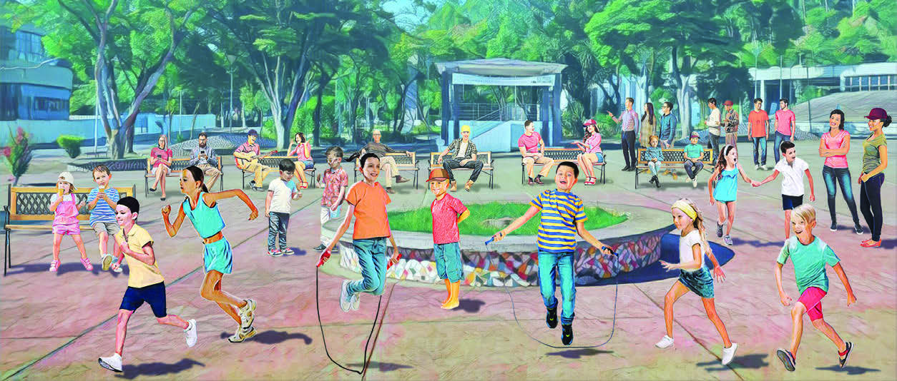

4)
OBSERVE A CENA A SEGUIR E RESPONDA:

A) SEM CONTAR, QUANTAS PESSOAS VOCÊ ACHA QUE ESTÃO NESSA CENA?
Resposta pessoal.
B) QUANTAS CRIANÇAS ESTÃO NA CENA?
15
C) A QUANTIDADE DE CRIANÇAS É UM NÚMERO PAR OU ÍMPAR?
Ímpar.
D) QUANTAS PESSOAS ESTÃO SENTADAS?
12 pessoas
E) QUANTAS PESSOAS ESTÃO USANDO CAMISA AZUL?
4 pessoas usam camisa azul.
F) QUANTAS CRIANÇAS ESTÃO CORRENDO?
6 crianças
G) TEM MAIS ADULTOS OU CRIANÇAS SENTADAS NESSA CENA?
Mais adultos.
H) AGORA, CONTE QUANTAS PESSOAS TEM NO TOTAL NESSA CENA.
32 pessoas
ALGO A MAIS
Para aprofundar os conhecimentos sobre os números pares e ímpares, sugerimos consultar o material Mentalidades matemáticas, de Priscila Macedo Andreani, Valéria Azzi Collet da Graça, Lucas Marçola (disponível em: https://mentalidadesmatematicas.org.br/wp-content/uploads/2022/03/Par-ou-Impar-I-DESAFIO-MM.pdf, acesso em: 21 mai. 2024).